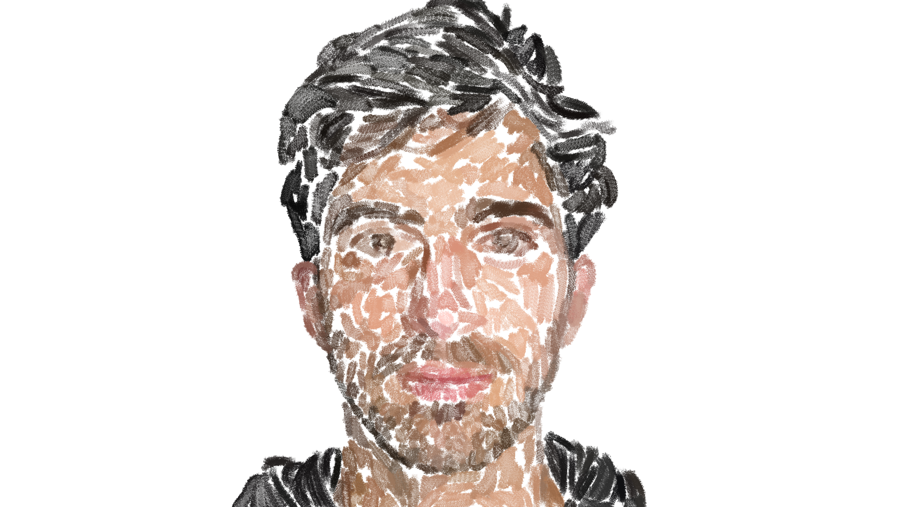
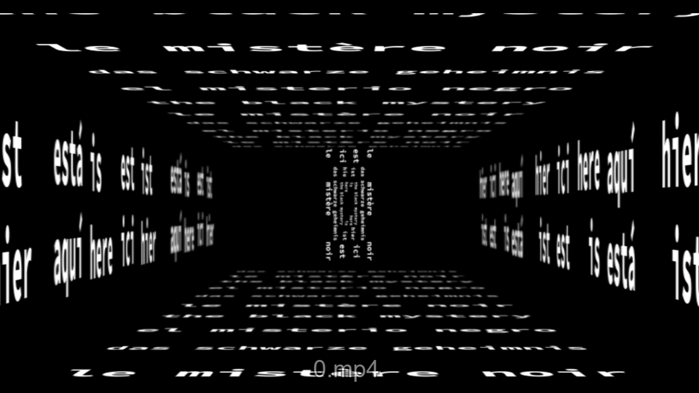

Patches/Self-Portraits
Animation Tests with Self-Portraits Drawn on Paper and Digitally

Showdown
Basic Animation and Storyboarding

All I Want Is You
Animated Video of 'All I Want is You' by Barry Louis Polisar

Animation Tests
Simple Animation Tests

The Black Mystery
Animated Adaptation of 'The Black Mystery' by Eugen Gomringer

Office After Hours
Blender Animation